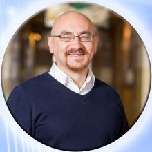

Склад кафедри
Сидоренко Валерій Миколайович
Кандидат технічних наук, доцент.
Освіта: Закінчив фізичний факультет Харківського державного університету ім. М. Горького в 1992 році і факультет комп’ютерних наук Харківського національного університету радіоелектроніки в 2002 році. Кандидат технічних наук (2010 р.), доцент (2012 р.). Працює на кафедрі з 1994 року.
Основні етапи педагогічної та наукової діяльності у вищих закладах освіти ІІІ–ІV рівня акредитації:
1992–1993 рр. – старший лаборант кафедри фізико-математичних дисциплін Глухівського державного педагогічного інституту;
1993–1994 рр. – молодший науковий співробітник відділу технології і стандартизації Інституту луб’яних культур УААН;
1994–1999 рр. – асистент кафедри комп’ютерної техніки та програмування Кременчуцького філіалу Харківського державного політехнічного університету;
1999–2010 рр. – старший викладач кафедри комп’ютерних та інформаційних систем Кременчуцького державного університету імені Михайла Остроградського;
2010–2020 рр. – доцент кафедри комп’ютерних та інформаційних систем Кременчуцького національного університету імені Михайла Остроградського;
2020 р. – в.о. завідувача кафедри КІС.
Дисципліни: «Теорія ймовірностей та математична статистика», «Алгоритми та методи обчислень», «Обробка сигналів та зображень», «Комп’ютерна графіка», «Інтелектуальний аналіз даних».
Коло наукових інтересів: інтелектуальний аналіз даних, Data Mining, Data Science (зокрема: інформаційні технології моніторингу, інформаційного впливу та управління в соціальних мережах), обробка сигналів та зображень, математичне та метрологічне забезпечення комп’ютеризованих систем моніторингу електромеханічного обладнання.
Основні наукові праці:
Наукова співпраця:
Учасник робочої групи проекту Еразмус+ з розвитку потенціалу вищої освіти «Рамка цифрових компетентностей для українських вчителів та інших громадян» (Digital competence framework for Ukrainian teachers and other citizens – dComFra, 598236-EPP-1-2018-1-LT-EPPKA2CBHE-SP).
Наукова співпраця з Computer and Management Engineering Department Universite de Monc (Бельгія) та Instituto Superior Dom Afonso III (Португалія) в рамках сумісної підготовки магістрів та аспірантів.
З 2009 р. – співпраця з дослідницько-експериментальним відділом Глухівського МЦПО Сумського територіального відділення МАН України в якості керівника наукових робіт.
2008–2014 рр. – офіційний представник від університету у рамках партнерської програми для ВНЗ у галузі освіти з компанією BaseGroup Labs.
Підвищення кваліфікації:
1. Internship program held by EPAM Systems, June-August 2020, Ukraine, сертифікат № 246.
2. Blended traning activities of Erasmus+ Capacity Building in the Field of Higher Education Project “Dagital competence framework for Ukrainian teachers and other citizens / dComFra” No. 598236-EPP-1-2018-1-LT-EPPKA2-CBHE-SP, 24.02.2020–02.07.2020.
3. Сертифікат B2, виданий ТОВ «English School Tomorrow» м.Харків, №UA1204 English File Upper – Intermediate (B2) level August 2019.
4. КрНУ імені Михайла Остроградського, ННЦПКПЛ, Свідоцтво про підвищення кваліфікації ПК№05385631/000703-18, «Удосконалення організації та змісту навчання з дисципліни «Основи інтелектуального аналізу даних»», 20.02.2018 р.
Підготовка наукових кадрів: Здійснює керівництво аспірантами. Підготував кандидата наук зі спеціальності 05.13.06 – інформаційні технології.
Контактна інформація:
vnsidorenko@gmail.com
LinkedIn